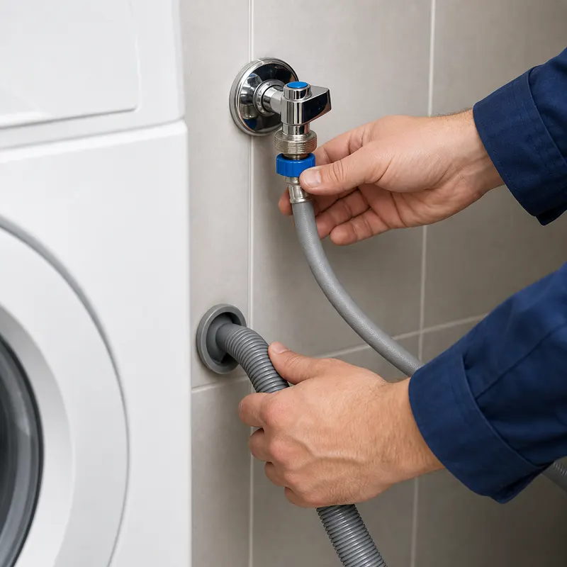

Подключение стиральной машины в Тюмени
Подключим стиральную машину к воде и канализации и проверим первый запуск, чтобы под ней не оказалось лужи.
Вызвать мастера или позвонить: +7 999 548-57-02Цены из прайса
| Подключение стиральной машины к готовым коммуникациям | 2 000–3 500 ₽ |
| Подключение с прокладкой труб | 3 500–5 500 ₽ |
Материалы и сантехнику в цену не включаем. Точную стоимость мастер называет на осмотре, до начала работ. Рассчитать смету

Два варианта подключения
- Готовые коммуникации: у машины уже есть вода и слив. Мастер подключает и проверяет.
- С прокладкой труб: сначала проводим воду и слив к месту, где будет стоять машина.
Как проходит работа
- Мастер подключает подачу воды и слив.
- Проверяет соединения на герметичность.
- Запускает машину и убеждается, что вода набирается и сливается без течи.
После ремонта кухни или ванной
- Мы подключаем сантехнику и технику после ремонта: можно заказать всё за один визит.
Частые вопросы
Подключаете посудомоечную машину?
Да, мастер подключает бытовую технику к воде и канализации. Цену на посудомоечную машину называем на осмотре, до начала работ.
Нужно ли готовить место заранее?
Достаточно доступа к кранам перекрытия и месту установки. Остальное мастер скажет на осмотре.
Можно ли прислать фото?
Да, плановую работу можно описать в WhatsApp или MAX и приложить фото: так точнее назовём цену.
Нужен сантехник в Тюмени?
Оставьте номер, мастер перезвонит за 5–10 минут и назовёт ориентир по цене.
Оставить заявку